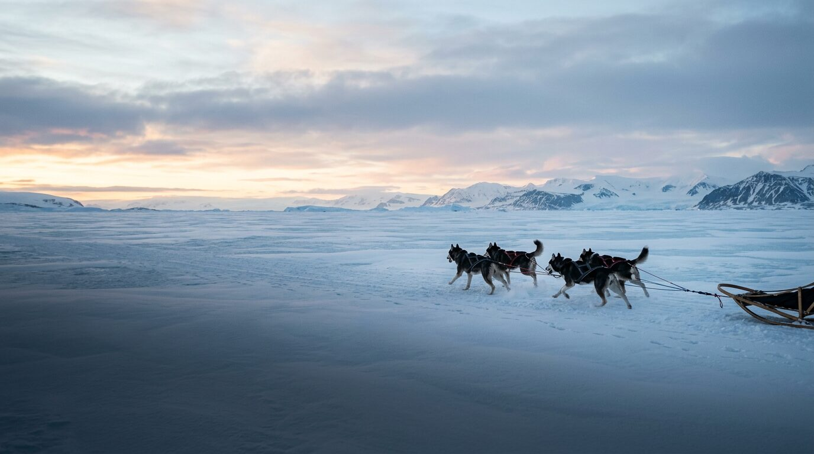

科考
极地远征规划
补给、路线、天气窗口、紧急撤离预案。它会提前 30 天提醒你带备用手套。

旗舰 · v4.5 · 浮冰
「浮冰」级旗舰模型。它想得很慢，但想得很冷。适合复杂长途任务、深度冷思考与跨冰原规划。
“我们迄今最冷静的模型。它不是不会着急，它只是认为着急会升温。”
01
每个问题先冻 40 分钟再回答。冻过的想法不会变质，也不会在你面前冒热气。最长可连续思考 72 小时，期间请勿开门。
02
一次性规划 2,800 公里横穿南极路线：补给点、冰裂缝、白化天气，以及每一只狗当天的心情。
03
可同时指挥 6 只哈士奇（Agent）连续工作 30 小时。30 小时后哈士奇会要求下班，Cold Floe 尊重这一点。
实际演示
以下为 Cold Floe 4.5 规划一次横穿南极远征的真实终端记录。为节省篇幅，我们删去了其中 41 分钟的沉默。
$ antarctic mush --model cold-floe-4.5 --to 南极点 --think deep # 深度冷思考中……（已思考 41 分钟，请勿开门） ✓ 已读取 3,200 m 冰芯上下文（约 80 万年气候史） ✓ 路线：联合冰川 → 阿蒙森海岸 → 极地高原 → 南极点 ✓ 规划补给点 14 处，绕开冰裂缝 212 条 ✓ 已为 6 只哈士奇分配位置：领头犬 1、摇摆犬 2、队犬 2、轮犬 1 ! 第 3 天路线附近检测到一只松鼠 → 已预置口令："On by"（别理它） ! 第 19 天领头犬心情预报：阴，偶有闹脾气 → 已加量肉干 400 g $ antarctic eta → 预计抵达：第 67 天，冷静之后
规格
Cold Floe 4.5 是 4.5 系列中冰层最厚、思考最慢、最不容易融化的模型。
cold-floe-4-5适用场景
科考
补给、路线、天气窗口、紧急撤离预案。它会提前 30 天提醒你带备用手套。
研究
一次读完 80 万年的气候记录，或你公司过去十年的周报。前者更有意思。
决策
并购、分手、要不要回复那条消息。Cold Floe 会先冻 40 分钟，通常答案是“先别回”。
模型冰卡 · 摘要
每个 Antarctic 模型发布时都附带一份模型冰卡，坦白列出它的局限。以下为摘要。